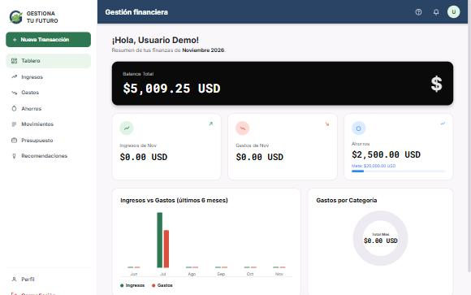

Gestiona Tu Futuro: app de finanzas
Aplicación de finanzas personales con registro e inicio de sesión. Permite anotar ingresos y gastos, fijar presupuestos y metas de ahorro, y ver gráficas y recomendaciones. Los datos se guardan en el navegador y las contraseñas se protegen con PBKDF2.
- JavaScript
- React
- localStorage
- PBKDF2